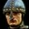

v0.20

Welcome to the KnightsQuest documentation.
Introduction
RedSquare is Windows (95, 98, 2000/XP, Vista, 7) game
Links
Website: http://www.plaatsoft.nl
Code: http://code.google.com/p/windows-knightsquest
Credits
Documentation: wplaat
WishList
ReleaseNotes
11-10-2011 Version 0.20
- Load map definition out xml file.
- Refactor C++ classes.
- Added QT 4.7.4 library.
- KnightsQuest is build with QtCreator v2.3.0
28-09-2010 Version 0.10
- Start building
- Created basic game board.
- Added mouse events.
- Added sound effects functionality.
- Use QT library 4.7.0 as Windows Interface.
- Added Windows setup file.
- Added source code to Google Code repository.
- KnightsQuest is build with QtCreator v2.0.0